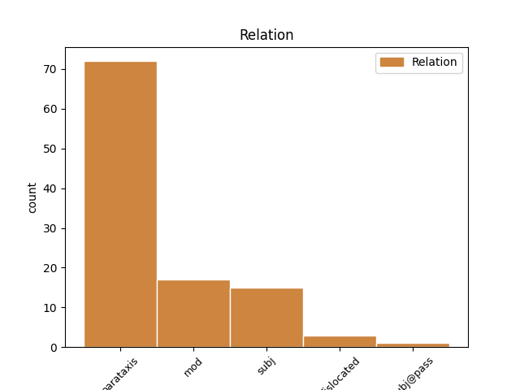
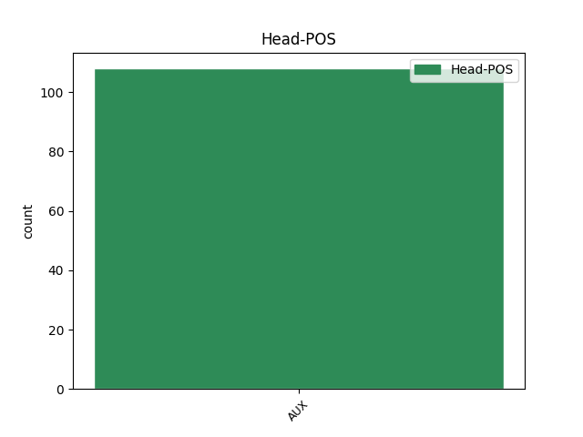
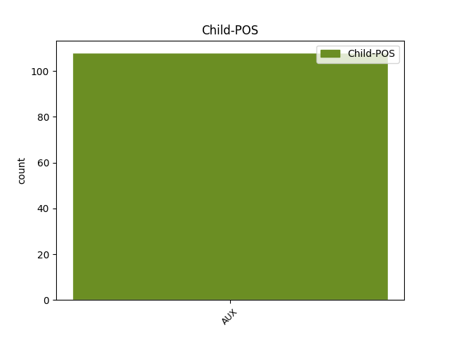

Distribution of features within this leaf



Agreement Rules sorted by frequency.
- When the dependent token is the parataxis(parataxis) of the head token, and the head token is VERB and the dependent token is AUX.
1 Հիշեցնենք _ _ _ _ 0 _ _ _
2 , _ _ _ _ 0 _ _ _
3 որ _ _ _ _ 0 _ _ _
4 պարտադիր _ _ _ _ 0 _ _ _
5 կուտակային _ _ _ _ 0 _ _ _
6 կենսաթոշակային _ _ _ _ 0 _ _ _
7 համակարգի _ _ _ _ 0 _ _ _
8 ներդրումը _ _ _ _ 0 _ _ _
9 մեծ _ _ _ _ 0 _ _ _
10 դժգոհություն _ _ _ _ 0 _ _ _
11 առաջացրեց առաջանալ VERB _ Aspect=Perf|Mood=Ind|Number=Sing|Person=3|Polarity=Pos|Subcat=Tran|Tense=Past|VerbForm=Fin|Voice=Act 0 _ _ _
12 Հայաստանում _ _ _ _ 0 _ _ _
13 . _ _ _ _ 0 _ _ _
14 երիտասարդները _ _ _ _ 0 _ _ _
15 տևական _ _ _ _ 0 _ _ _
16 ժամանակ _ _ _ _ 0 _ _ _
17 բողոքի _ _ _ _ 0 _ _ _
18 ցույցեր _ _ _ _ 0 _ _ _
19 էին եմ AUX _ Aspect=Imp|Mood=Ind|Number=Plur|Person=3|Polarity=Pos|Tense=Imp|VerbForm=Fin 11 parataxis _ LTranslit=em|Translit=ēin
20 անցկացնում _ _ _ _ 0 _ _ _
21 ` _ _ _ _ 0 _ _ _
22 պահանջելով _ _ _ _ 0 _ _ _
23 չեղարկել _ _ _ _ 0 _ _ _
24 այն _ _ _ _ 0 _ _ _
25 : _ _ _ _ 0 _ _ _
1 Մեր _ _ _ _ 0 _ _ _
2 մեջ _ _ _ _ 0 _ _ _
3 ազատության _ _ _ _ 0 _ _ _
4 առաջին _ _ _ _ 0 _ _ _
5 իսկ _ _ _ _ 0 _ _ _
6 հնարավորությամբ _ _ _ _ 0 _ _ _
7 արթնացել _ _ _ _ 0 _ _ _
8 էր _ _ _ _ 0 _ _ _
9 հին _ _ _ _ 0 _ _ _
10 ու _ _ _ _ 0 _ _ _
11 նոր _ _ _ _ 0 _ _ _
12 անարդարությունների _ _ _ _ 0 _ _ _
13 դեմ _ _ _ _ 0 _ _ _
14 բողոքը _ _ _ _ 0 _ _ _
15 , _ _ _ _ 0 _ _ _
16 ու _ _ _ _ 0 _ _ _
17 մենք _ _ _ _ 0 _ _ _
18 իրոք _ _ _ _ 0 _ _ _
19 չգիտեինք գիտել VERB _ Aspect=Imp|Mood=Ind|Number=Plur|Person=1|Polarity=Neg|Subcat=Tran|Tense=Imp|VerbForm=Fin|Voice=Act 0 _ _ _
20 ՝ _ _ _ _ 0 _ _ _
21 առաջին _ _ _ _ 0 _ _ _
22 էկոլոգիական _ _ _ _ 0 _ _ _
23 ցույցը _ _ _ _ 0 _ _ _
24 առիթն _ _ _ _ 0 _ _ _
25 էր եմ AUX _ Aspect=Imp|Mood=Ind|Number=Sing|Person=3|Polarity=Pos|Tense=Imp|VerbForm=Fin 19 comp:obj _ LTranslit=em|SpaceAfter=No|Translit=ēr
26 , _ _ _ _ 0 _ _ _
27 թե _ _ _ _ 0 _ _ _
28 պատճառը _ _ _ _ 0 _ _ _
29 մեր _ _ _ _ 0 _ _ _
30 մեծ _ _ _ _ 0 _ _ _
31 շարժման _ _ _ _ 0 _ _ _
32 , _ _ _ _ 0 _ _ _
33 բայց _ _ _ _ 0 _ _ _
34 որ _ _ _ _ 0 _ _ _
35 մեծ _ _ _ _ 0 _ _ _
36 մի _ _ _ _ 0 _ _ _
37 բան _ _ _ _ 0 _ _ _
38 էինք _ _ _ _ 0 _ _ _
39 սկսել _ _ _ _ 0 _ _ _
40 , _ _ _ _ 0 _ _ _
41 անկասկած _ _ _ _ 0 _ _ _
42 է _ _ _ _ 0 _ _ _
43 : _ _ _ _ 0 _ _ _
1 Ինքն _ _ _ _ 0 _ _ _
2 էլ _ _ _ _ 0 _ _ _
3 համաձայն _ _ _ _ 0 _ _ _
4 էր _ _ _ _ 0 _ _ _
5 . _ _ _ _ 0 _ _ _
6 « _ _ _ _ 0 _ _ _
7 Էրեխու _ _ _ _ 0 _ _ _
8 զորությունն _ _ _ _ 0 _ _ _
9 ինչ _ _ _ _ 0 _ _ _
10 ՞ _ _ _ _ 0 _ _ _
11 ա _ _ _ _ 0 _ _ _
12 , _ _ _ _ 0 _ _ _
13 ձեռդ _ _ _ _ 0 _ _ _
14 սեղմեցիր սեղմել VERB _ Aspect=Perf|Mood=Ind|Number=Sing|Person=2|Polarity=Pos|Subcat=Tran|Tense=Past|VerbForm=Fin|Voice=Act 0 _ _ _
15 քիթբերնին _ _ _ _ 0 _ _ _
16 ՝ _ _ _ _ 0 _ _ _
17 խեղդված _ _ _ _ 0 _ _ _
18 ա եմ AUX _ Aspect=Imp|Mood=Ind|Number=Sing|Person=3|Polarity=Pos|Style=Coll|Tense=Pres|VerbForm=Fin 14 mod _ LTranslit=em|SpaceAfter=No|Translit=a
19 » _ _ _ _ 0 _ _ _
20 ։ _ _ _ _ 0 _ _ _
1 Պարզվեց պարզվել VERB _ Aspect=Perf|Mood=Ind|Number=Sing|Person=3|Polarity=Pos|Subcat=Intr|Tense=Past|VerbForm=Fin|Voice=Mid 0 _ _ _
2 ՝ _ _ _ _ 0 _ _ _
3 թուրք _ _ _ _ 0 _ _ _
4 էր եմ AUX _ Aspect=Imp|Mood=Ind|Number=Sing|Person=3|Polarity=Pos|Tense=Imp|VerbForm=Fin 1 subj _ LTranslit=em|SpaceAfter=No|Translit=ēr
5 ։ _ _ _ _ 0 _ _ _
1 Նա _ _ _ _ 0 _ _ _
2 ինքը _ _ _ _ 0 _ _ _
3 զարմացավ _ _ _ _ 0 _ _ _
4 , _ _ _ _ 0 _ _ _
5 որ _ _ _ _ 0 _ _ _
6 իսկապես _ _ _ _ 0 _ _ _
7 ուզում _ _ _ _ 0 _ _ _
8 է _ _ _ _ 0 _ _ _
9 մեռնել _ _ _ _ 0 _ _ _
10 . _ _ _ _ 0 _ _ _
11 դա _ _ _ _ 0 _ _ _
12 քաջություն _ _ _ _ 0 _ _ _
13 չէր _ _ _ _ 0 _ _ _
14 , _ _ _ _ 0 _ _ _
15 հուսալքման _ _ _ _ 0 _ _ _
16 պահ _ _ _ _ 0 _ _ _
17 չէր _ _ _ _ 0 _ _ _
18 . _ _ _ _ 0 _ _ _
19 և _ _ _ _ 0 _ _ _
20 միտք _ _ _ _ 0 _ _ _
21 չէր _ _ _ _ 0 _ _ _
22 . _ _ _ _ 0 _ _ _
23 նա _ _ _ _ 0 _ _ _
24 անկեղծ _ _ _ _ 0 _ _ _
25 ուզեց _ _ _ _ 0 _ _ _
26 մեռնել _ _ _ _ 0 _ _ _
27 , _ _ _ _ 0 _ _ _
28 և _ _ _ _ 0 _ _ _
29 նա _ _ _ _ 0 _ _ _
30 հասկացավ հասկանալ VERB _ Aspect=Perf|Mood=Ind|Number=Sing|Person=3|Polarity=Pos|Subcat=Tran|Tense=Past|VerbForm=Fin|Voice=Act 0 _ _ _
31 աշխարհը _ _ _ _ 0 _ _ _
32 . _ _ _ _ 0 _ _ _
33 ամեն _ _ _ _ 0 _ _ _
34 ինչ _ _ _ _ 0 _ _ _
35 հասարակ _ _ _ _ 0 _ _ _
36 է եմ AUX _ Aspect=Imp|Mood=Ind|Number=Sing|Person=3|Polarity=Pos|Tense=Pres|VerbForm=Fin 30 appos _ LTranslit=em|SpaceAfter=No|Translit=ē
37 , _ _ _ _ 0 _ _ _
38 ու _ _ _ _ 0 _ _ _
39 ինքը _ _ _ _ 0 _ _ _
40 նրա _ _ _ _ 0 _ _ _
41 մասը _ _ _ _ 0 _ _ _
42 չէ _ _ _ _ 0 _ _ _
43 . _ _ _ _ 0 _ _ _
44 ինքը _ _ _ _ 0 _ _ _
45 ազատ _ _ _ _ 0 _ _ _
46 է _ _ _ _ 0 _ _ _
47 , _ _ _ _ 0 _ _ _
48 և _ _ _ _ 0 _ _ _
49 ինքը _ _ _ _ 0 _ _ _
50 ուրիշ _ _ _ _ 0 _ _ _
51 է _ _ _ _ 0 _ _ _
52 . _ _ _ _ 0 _ _ _
53 նա _ _ _ _ 0 _ _ _
54 չզգաց _ _ _ _ 0 _ _ _
55 պարտություն _ _ _ _ 0 _ _ _
56 և _ _ _ _ 0 _ _ _
57 չունեցավ _ _ _ _ 0 _ _ _
58 զգայախաբություն _ _ _ _ 0 _ _ _
59 ։ _ _ _ _ 0 _ _ _
1 Նրան _ _ _ _ 0 _ _ _
2 կարող _ _ _ _ 0 _ _ _
3 են _ _ _ _ 0 _ _ _
4 ազատազրկել _ _ _ _ 0 _ _ _
5 , _ _ _ _ 0 _ _ _
6 գնդակահարել _ _ _ _ 0 _ _ _
7 , _ _ _ _ 0 _ _ _
8 տեղափոխել _ _ _ _ 0 _ _ _
9 ԵԱՏՄ _ _ _ _ 0 _ _ _
10 անդամ _ _ _ _ 0 _ _ _
11 այլ _ _ _ _ 0 _ _ _
12 երկրի _ _ _ _ 0 _ _ _
13 բանտ _ _ _ _ 0 _ _ _
14 , _ _ _ _ 0 _ _ _
15 չէ եմ AUX _ Aspect=Imp|Mood=Ind|Number=Sing|Person=3|Polarity=Neg|Tense=Pres|VerbForm=Fin 23 discourse _ LTranslit=em|Translit=čē
16 ՞ _ _ _ _ 0 _ _ _
17 որ _ _ _ _ 0 _ _ _
18 մենք _ _ _ _ 0 _ _ _
19 հիմա _ _ _ _ 0 _ _ _
20 մեկ _ _ _ _ 0 _ _ _
21 ընդհանուր _ _ _ _ 0 _ _ _
22 բանտ _ _ _ _ 0 _ _ _
23 ունենք ունեմ VERB _ Aspect=Imp|Mood=Ind|Number=Plur|Person=1|Polarity=Pos|Subcat=Tran|Tense=Pres|VerbForm=Fin|Voice=Act 0 _ _ _
24 : _ _ _ _ 0 _ _ _
Disagree Examples:
1 Է եմ AUX _ Aspect=Imp|Mood=Ind|Number=Sing|Person=3|Polarity=Pos|Tense=Pres|VerbForm=Fin 6 discourse _ LTranslit=em|Translit=Ē
2 հա _ _ _ _ 0 _ _ _
3 , _ _ _ _ 0 _ _ _
4 բա _ _ _ _ 0 _ _ _
5 ինչ _ _ _ _ 0 _ _ _
6 անենք անել VERB _ Aspect=Prosp|Mood=Sub|Number=Plur|Person=1|Polarity=Pos|Subcat=Tran|Tense=Pres|VerbForm=Fin|Voice=Act 0 _ _ _
7 , _ _ _ _ 0 _ _ _
8 հո _ _ _ _ 0 _ _ _
9 սոված _ _ _ _ 0 _ _ _
10 չենք _ _ _ _ 0 _ _ _
11 ՞ _ _ _ _ 0 _ _ _
12 մնալու _ _ _ _ 0 _ _ _
13 ։ _ _ _ _ 0 _ _ _
1 Անդադար _ _ _ _ 0 _ _ _
2 , _ _ _ _ 0 _ _ _
3 ճամփեդ _ _ _ _ 0 _ _ _
4 որոգայթներով _ _ _ _ 0 _ _ _
5 է _ _ _ _ 0 _ _ _
6 սփռված _ _ _ _ 0 _ _ _
7 , _ _ _ _ 0 _ _ _
8 ժամանակ _ _ _ _ 0 _ _ _
9 չեն _ _ _ _ 0 _ _ _
10 տա _ _ _ _ 0 _ _ _
11 , _ _ _ _ 0 _ _ _
12 որ _ _ _ _ 0 _ _ _
13 տեսնես տեսնել VERB _ Aspect=Prosp|Mood=Sub|Number=Sing|Person=2|Polarity=Pos|Subcat=Tran|Tense=Pres|VerbForm=Fin|Voice=Act 0 _ _ _
14 ՝ _ _ _ _ 0 _ _ _
15 ով _ _ _ _ 0 _ _ _
16 ես եմ AUX _ Aspect=Imp|Mood=Ind|Number=Sing|Person=2|Polarity=Pos|Tense=Pres|VerbForm=Fin 13 comp:obj _ LTranslit=em|SpaceAfter=No|Translit=es
17 , _ _ _ _ 0 _ _ _
18 ինչ _ _ _ _ 0 _ _ _
19 ես _ _ _ _ 0 _ _ _
20 ուզում _ _ _ _ 0 _ _ _
21 , _ _ _ _ 0 _ _ _
22 ինչ _ _ _ _ 0 _ _ _
23 չես _ _ _ _ 0 _ _ _
24 ուզում _ _ _ _ 0 _ _ _
25 , _ _ _ _ 0 _ _ _
26 որսում _ _ _ _ 0 _ _ _
27 են _ _ _ _ 0 _ _ _
28 ու _ _ _ _ 0 _ _ _
29 որսում _ _ _ _ 0 _ _ _
30 ... _ _ _ _ 0 _ _ _
1 Ու _ _ _ _ 0 _ _ _
2 հասկանում _ _ _ _ 0 _ _ _
3 ես _ _ _ _ 0 _ _ _
4 ՝ _ _ _ _ 0 _ _ _
5 պիտի _ _ _ _ 0 _ _ _
6 որսվես որսալ VERB _ Aspect=Prosp|Mood=Sub|Number=Sing|Person=2|Polarity=Pos|Subcat=Intr|Tense=Pres|VerbForm=Fin|Voice=Pass 0 _ _ _
7 , _ _ _ _ 0 _ _ _
8 նույնն _ _ _ _ 0 _ _ _
9 է եմ AUX _ Aspect=Imp|Mood=Ind|Number=Sing|Person=3|Polarity=Pos|Tense=Pres|VerbForm=Fin 6 appos _ LTranslit=em|Translit=ē
10 թե _ _ _ _ 0 _ _ _
11 ՝ _ _ _ _ 0 _ _ _
12 պիտի _ _ _ _ 0 _ _ _
13 ապրես _ _ _ _ 0 _ _ _
14 , _ _ _ _ 0 _ _ _
15 ապրելն _ _ _ _ 0 _ _ _
16 ուրիշ _ _ _ _ 0 _ _ _
17 ձև _ _ _ _ 0 _ _ _
18 չունի _ _ _ _ 0 _ _ _
19 ։ _ _ _ _ 0 _ _ _
1 Չէ _ _ _ _ 0 _ _ _
2 , _ _ _ _ 0 _ _ _
3 նա _ _ _ _ 0 _ _ _
4 անփոփոխ _ _ _ _ 0 _ _ _
5 է _ _ _ _ 0 _ _ _
6 , _ _ _ _ 0 _ _ _
7 դու _ _ _ _ 0 _ _ _
8 փոխվեցիր _ _ _ _ 0 _ _ _
9 , _ _ _ _ 0 _ _ _
10 գնա գնալ VERB _ Aspect=Prosp|Mood=Imp|Number=Sing|Person=2|Subcat=Intr|VerbForm=Fin|Voice=Mid 0 _ _ _
11 ՛ _ _ _ _ 0 _ _ _
12 , _ _ _ _ 0 _ _ _
13 ասում _ _ _ _ 0 _ _ _
14 են եմ AUX _ Aspect=Imp|Mood=Ind|Number=Plur|Person=3|Polarity=Pos|Tense=Pres|VerbForm=Fin 10 parataxis _ LTranslit=em|SpaceAfter=No|Translit=en
15 , _ _ _ _ 0 _ _ _
16 հանգստացիր _ _ _ _ 0 _ _ _
17 ՛ _ _ _ _ 0 _ _ _
18 , _ _ _ _ 0 _ _ _
19 թոշակ _ _ _ _ 0 _ _ _
20 - _ _ _ _ 0 _ _ _
21 մոշակ _ _ _ _ 0 _ _ _
22 ... _ _ _ _ 0 _ _ _
1 Ակաթի _ _ _ _ 0 _ _ _
2 հայրն _ _ _ _ 0 _ _ _
3 աղջկա _ _ _ _ 0 _ _ _
4 փորը _ _ _ _ 0 _ _ _
5 կլորանալուց _ _ _ _ 0 _ _ _
6 հետո _ _ _ _ 0 _ _ _
7 նրանից _ _ _ _ 0 _ _ _
8 երես _ _ _ _ 0 _ _ _
9 էր _ _ _ _ 0 _ _ _
10 թեքել _ _ _ _ 0 _ _ _
11 , _ _ _ _ 0 _ _ _
12 ոչ _ _ _ _ 0 _ _ _
13 տեսնել _ _ _ _ 0 _ _ _
14 էր _ _ _ _ 0 _ _ _
15 ուզում _ _ _ _ 0 _ _ _
16 , _ _ _ _ 0 _ _ _
17 ոչ _ _ _ _ 0 _ _ _
18 խոսել _ _ _ _ 0 _ _ _
19 , _ _ _ _ 0 _ _ _
20 իսկ _ _ _ _ 0 _ _ _
21 երբ _ _ _ _ 0 _ _ _
22 իմացավ _ _ _ _ 0 _ _ _
23 , _ _ _ _ 0 _ _ _
24 որ _ _ _ _ 0 _ _ _
25 աղջիկ _ _ _ _ 0 _ _ _
26 է _ _ _ _ 0 _ _ _
27 ծնվել _ _ _ _ 0 _ _ _
28 ՝ _ _ _ _ 0 _ _ _
29 « _ _ _ _ 0 _ _ _
30 իրա _ _ _ _ 0 _ _ _
31 նման _ _ _ _ 0 _ _ _
32 լիրբ _ _ _ _ 0 _ _ _
33 պիտի _ _ _ _ 0 _ _ _
34 լինի _ _ _ _ 0 _ _ _
35 , _ _ _ _ 0 _ _ _
36 էլի _ _ _ _ 0 _ _ _
37 » _ _ _ _ 0 _ _ _
38 ասաց _ _ _ _ 0 _ _ _
39 , _ _ _ _ 0 _ _ _
40 ու _ _ _ _ 0 _ _ _
41 կնոջը _ _ _ _ 0 _ _ _
42 պատվիրեց _ _ _ _ 0 _ _ _
43 . _ _ _ _ 0 _ _ _
44 « _ _ _ _ 0 _ _ _
45 Մեր _ _ _ _ 0 _ _ _
46 տուն _ _ _ _ 0 _ _ _
47 էլ _ _ _ _ 0 _ _ _
48 չմտնի _ _ _ _ 0 _ _ _
49 , _ _ _ _ 0 _ _ _
50 բնակարան _ _ _ _ 0 _ _ _
51 վարձիր _ _ _ _ 0 _ _ _
52 , _ _ _ _ 0 _ _ _
53 թող _ _ _ _ 0 _ _ _
54 գնա _ _ _ _ 0 _ _ _
55 իր _ _ _ _ 0 _ _ _
56 համար _ _ _ _ 0 _ _ _
57 ոնց _ _ _ _ 0 _ _ _
58 ուզում _ _ _ _ 0 _ _ _
59 է եմ AUX _ Aspect=Imp|Mood=Ind|Number=Sing|Person=3|Polarity=Pos|Tense=Pres|VerbForm=Fin 60 comp:pred _ LTranslit=em|Translit=ē
60 ապրի ապրել VERB _ Aspect=Prosp|Mood=Sub|Number=Sing|Person=3|Polarity=Pos|Subcat=Intr|Tense=Pres|VerbForm=Fin|Voice=Mid 0 _ _ _
61 » _ _ _ _ 0 _ _ _
62 , _ _ _ _ 0 _ _ _
63 — _ _ _ _ 0 _ _ _
64 ասաց _ _ _ _ 0 _ _ _
65 , _ _ _ _ 0 _ _ _
66 իսկ _ _ _ _ 0 _ _ _
67 մտքում _ _ _ _ 0 _ _ _
68 ՝ _ _ _ _ 0 _ _ _
69 « _ _ _ _ 0 _ _ _
70 Կապույտ _ _ _ _ 0 _ _ _
71 աղջիկ _ _ _ _ 0 _ _ _
72 , _ _ _ _ 0 _ _ _
73 ակաթի _ _ _ _ 0 _ _ _
74 ... _ _ _ _ 0 _ _ _
75 » _ _ _ _ 0 _ _ _
76 ։ _ _ _ _ 0 _ _ _